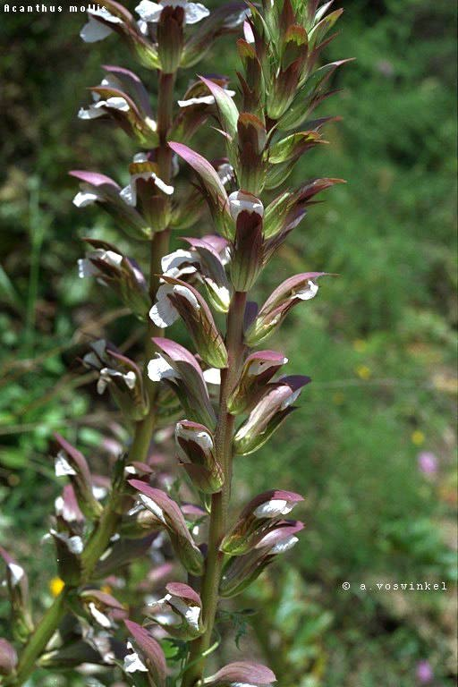
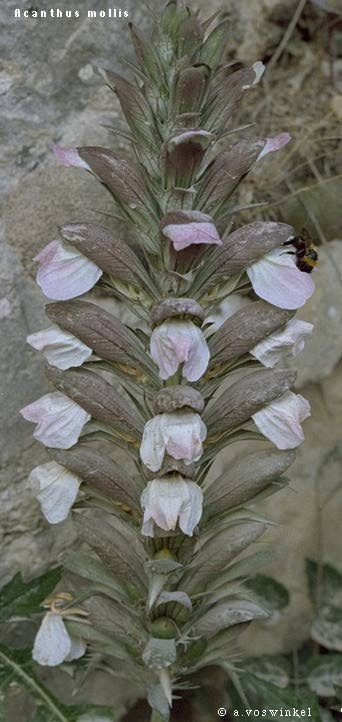
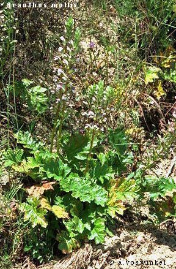

<table>
<tr>
<td>
<H2>Genus: Acanthus</H2>
<H3> Genus description: </H3> 
Robust perennial herbs or small shrub.Stems simple, terete, erect.Leaves mostly basal, pinnatifid to pinnatesect.Flowers in dense, terminal, cylindrical spikes.Bracts large, spinose-dentate; bracteoles entire, lanceolate to linear.Calyx 4-lobed; upper and lower lobes large, the lateral small.Corolla 1-lipped (upper lip absent), 3-lobed; tube short.Stamen 4, included; anthers 1-celled, connate in pairs.Fruit a capsule.<P>
<STRONG><U>Species and images:</U></STRONG><P>
<UL>
<LI><A HREF="A.mollis.html">A.mollis</A> (click to see fullsize image)
<UL>
<table>
<TR>
<TD>
<LI><A HREF="A.mollis/1.total.jpeg">  </A>
</TD>
<TD>
<LI><A HREF="A.mollis/2.old_close.jpeg">  </A>
</TD>
<TD>
<LI><A HREF="A.mollis/3.leaves.jpeg">  </A>
</TD>
</table>

</UL>
</UL>
</td>
<td>
<script type="text/javascript"><!--
google_ad_client = "pub-0748382504364839";
/* MacMerikFloraB */
google_ad_slot = "2739593908";
google_ad_width = 160;
google_ad_height = 600;
//-->
</script>
<script type="text/javascript"
src="https://pagead2.googlesyndication.com/pagead/show_ads.js">
</script>

</td>
</tr>
</table>
